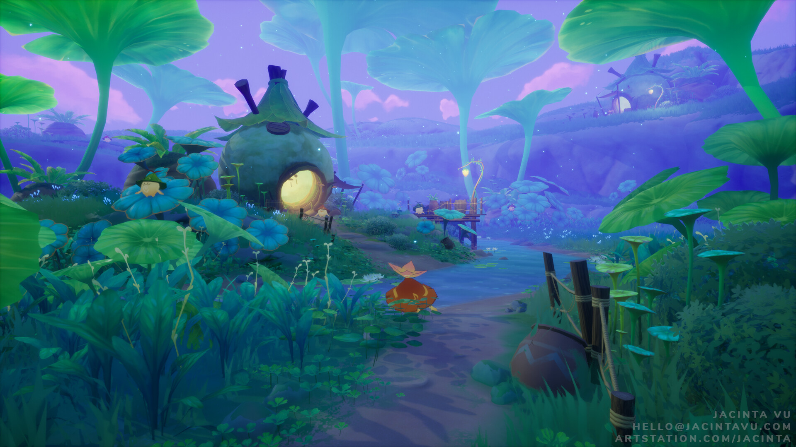

Sumeru City
The scholarly center of Teyvat. Wander the halls of the Akademiya and the buzz of the Grand Bazaar.
Order Now

 Hexanova Agency
Hexanova Agency
The Land of Wisdom
The city of scholars located in the west-central part of Teyvat.
A fantastical nation of both lush rainforest and barren desert,
where countless fruits of wisdom grow and are buried. Whether
Travelers travel from afar through the forest to reach the academy
city or delve deep into the desert to discover the historical ruins
of the red desert, a wealth of valuable knowledge awaits them here.
Sumeru City is a subarea and a main city located in Avidya Forest,
Dharma Forest, Sumeru.
Sumeru City is known across Teyvat as the "City of Wisdom."
It is under the jurisdiction of
the Sumeru Akademiya and is built on top of the Divine Tree.
The city features many districts
and points of interest, such as the Grand Bazaar, Zubayr
Theater, Treasures Street, and more.
Located in the middle to top half of the tree is The
Akademiya, which serves as the main base
of the Sumeru Akademiya. On top of The Akademiya
rests the Sanctuary of Surasthana, which is a
treetop palace where Lesser Lord Kusanali resides.
Learn everything and uncover the beauty of sumeru.
